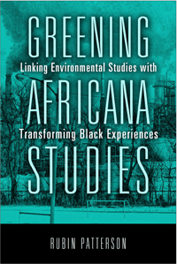

Establishes the need to include environmental studies as part of the Africana studies curriculum
Establishes the need to include environmental studies as part of the Africana studies curriculum


 Establishes the need to include environmental studies as part of the Africana studies curriculum
Establishes the need to include environmental studies as part of the Africana studies curriculum

|  |
Greening Africana StudiesLinking Environmental Studies with Transforming Black ExperiencesRubin Pattersonpaper EAN: 978-1-43990-872-3 (ISBN: 1-4399-0872-9) |
"Greening Africana Studies is an innovative and creative book emphasizing the need to successfully integrate analyses of environmental issues that continue to impact the lives of people of African descent into the academic literature published by Africana scholars. Patterson’s book, which seeks to situate the issue of environmental studies within the much broader discussions, trajectories, and realities that are the primary focus of the discipline of black studies, includes useful public policy recommendations that can be implemented to improve conditions in minority communities. This is an important work written at a critical time in the historical development and survival of the African American community."
—Bessie House-Soremekun, Director of Africana Studies and Professor of Political Science and Africana Studies, Indiana University–Purdue University Indianapolis
Insufficient attention has been given to the environment in Africana studies within the academy. In Greening Africana Studies, Rubin Patterson initiates an important conversation explaining why and how the gap between these two disciplines can and should be bridged. His comprehensive book calls for a green African transnationalism and focuses on the mission and major paradigms that identify the respective curriculum, research interests, and practices.
In his original work, Patterson demonstrates the ways in which black communities are harmed by local environmental degradation and global climate change. He shows that many local unwanted land use sites (LULUs), such as brownfields and toxic release inventory facilities, are disproportionately located in close proximity to neighborhoods of color, but also to colleges and universities with Africana studies programs. Arguing that such communities are not aggressively engaging in environmental issues, Greening Africana Studies also provides examples of how Africana studies students as well as members of black communities can prepare for green careers.
Excerpt available at www.temple.edu/tempress
"Patterson has identified a significant gap in Africana studies. Beyond this book, there is little, if any, scholarship regarding environmental studies and the development of the greening frame in Africana studies. Patterson puts on the table issues that are rarely addressed, such as the economic consequences of a missing Africana environmental lens. His contention that environmental studies should be integrated into Africana studies is an important position to explore. Greening Africana Studies is a unique contribution to the field."
—Rose Brewer, Professor of African American and African Studies, University of Minnesota
"Patterson makes a strong case for the multidisciplinary fields of Africana studies and environmental studies to interact more and articulate the concerns of their shared communities, especially given the unsurprising statistical tabulations correlating cities exhibiting environmental racism with cities housing Africana studies programs.... Summing Up: Recommended."
—Choice
"Using a very carefully structured, technical, and rigorous approach, [Patterson] surveys the field of Africana studies and environmental studies to outline common interests.... He offers a comprehensive overview of the various paradigms of both...as a way of promoting dialogue between these respective fields. Patterson is breaking new ground by introducing the argument, building on the increasing number of activists and scholars that are bridging disciplines."
—Teachers College Record
"Rubin Patterson has written a book that represents an ambitious, innovative, and important undertaking: the development of a sound rationale for linking the fields of Africana Studies...and Environmental Studies.... [He] speak[s] with authority on this matter like very few others..... What readers will find even more engaging about this book are the concrete steps the author develops for making his vision achievable and for supporting its rationale.... The author makes a convincing case that not only is there a need for these sorts of commitments in these communities, but that the return on those investments would likely be quite significant and greatly beneficial to students seeking to build meaningful careers and to communities seeking environmental and economic resilience. At a historic moment when the climate crisis, pernicious and rising levels of social inequality, and the call of 'Black Lives Matter' are converging, the thesis, evidence, and analysis contained in Greening Africana Studies are timely and reflect the kind of dynamic and original thinking we need."
—Contemporary Sociology
Acknowledgments
Introduction: Bridging Africana Studies and Environmental Studies
1. Greening Africana Studies: Redemption, Redevelopment, and Remuneration in the Black Community
2. We Have a Lot in Common: Let’s Talk
3. Brownfields, Toxics Release Inventory Facilities, and the Black Community
4. Green Jobs
5. Greening and Growing Africa Economically: A Role for Transnationalism
Conclusion
References
Index
Rubin Patterson is Professor and Chair of Sociology and Anthropology at Howard University in Washington, D.C. He is also a Research Associate in the Department of Sociology at the University of the Witwatersrand in Johannesburg, South Africa. He has published essays on transnationalism and environmental issues in various journals, including Social Forces, Globalizations, the Journal of Black Studies, and the Journal of Industrial Ecology. He served for ten years as the founding editor of the journal Perspectives on Global Development and Technology.
African American Studies
Nature and the Environment
Education
© 2016 Temple University. All Rights Reserved. This page: http://www.temple.edu/tempress/titles/2207_reg.html.